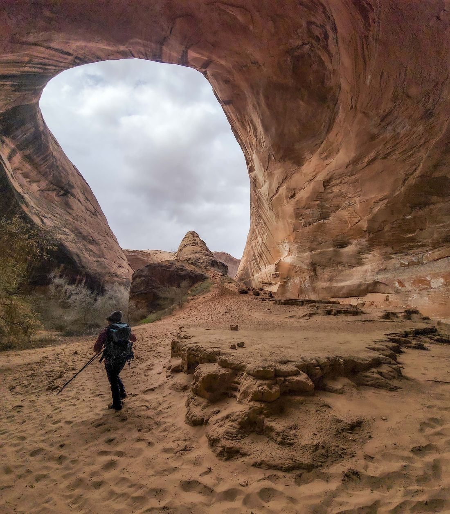

Walk in from the Hurricane Wash trailhead on Hole-in-the-Rock Road, follow the stream down the gulch past Jacob Hamblin Arch, Coyote Natural Bridge and Cliff Arch toward the Escalante River, and walk back the same way. Give it four days and three nights at 5 to 8 miles a day. You need an overnight backcountry permit, you must carry out all human waste, and your feet will be wet for much of the trip. That's the route we guide. It has little elevation change and no exposed climbing.
- Where
- The Escalante canyons of southern Utah, in Grand Staircase-Escalante National Monument and the Escalante District of Glen Canyon National Recreation Area. Trips start from the town of Escalante.
- Route
- Out and back from the Hurricane Wash trailhead to the Escalante River.
- Time
- 4 trail days and 3 nights, 5 to 8 miles a day.
- Difficulty
- 4 of 10 on Dreamland's scale. Suitable for motivated, fit first-time backpackers.
- Terrain
- Sand, many shallow stream crossings, stretches of mandatory wading and some mild scrambling.
- Busy season
- Spring and fall.
- Permit
- Required for every overnight stay. See below.
Why is Coyote Gulch worth the walk?
If there were a hall of fame for desert backpacking trips, Coyote Gulch would be at its center. Arches, alcoves, a natural bridge and waterfalls sit between red cliffs, with cottonwood trees growing along a stream that runs through the desert. Our guides say the reward-to-effort ratio is high on this one. The National Park Service calls it the most popular backpacking destination of all the canyons of the Escalante.
The honest part: you won't have it to yourself. In spring and fall, plan on meeting other groups. The Park Service says it plainly: if solitude is one of your main goals, consider another route. There's still mile after mile of canyon, and usually plenty of campsites to choose from.
What does the trip look like, day by day?
This is the plan we follow on our guided trips.
- Trail day 1: Hurricane Wash to the first camp. Drive from Escalante down Hole-in-the-Rock Road to the Hurricane Wash trailhead. Walk about 5 miles and set up camp.
- Trail days 2 and 3: the length of the gulch. Walk down the canyon past Jacob Hamblin Arch, Coyote Natural Bridge and Cliff Arch toward the Escalante River, then turn around and retrace your steps. The views are spectacular in both directions.
- Trail day 4: back to the trailhead. Walk out to Hurricane Wash and drive back to Escalante.
There are other ways in and out of Coyote Gulch. They involve climbing or scrambling, and this page doesn't cover them.

What permit do I need, and what are the rules?
These are the National Park Service's rules for Coyote Gulch as of November 24, 2026, when we last checked them. The agency's page is dated May 4, 2026. Rules change, so read the agency page before you go.
| Rule | What it says |
|---|---|
| Overnight permit | Required for all overnight stays in the Escalante District of Glen Canyon National Recreation Area. Get it at the Escalante Interagency Visitor Center in the town of Escalante, or at one of the entry trailheads. |
| Day hikes | No permit. Sign the trail register. |
| Group size | 12 people at most. Larger parties must split up and stay at least half a mile apart, hiking and camping. |
| Human waste | All solid human waste must be carried out, in a portable toilet or a purpose-made waste bag system. An ordinary plastic or paper bag is not allowed. You bring your own. |
| Trash | Carry everything out, including toilet paper and hygiene items. Do not burn or bury it. |
| Fires | Not permitted. |
| Pets and pack animals | Not permitted. |
| Food | Store food and trash so that birds and other wildlife cannot get into them. |
| Rock cairns | Do not build them. |
| Noise | Voices carry in a canyon. No amplified music. |
How wet will my feet get, and what should I wear?
Wet, and often. Coyote Gulch has numerous shallow stream crossings and stretches where wading is the only way through. You'll be hiking in wet shoes. It isn't as bad as it sounds.
- Wear synthetic hiking boots or trail shoes that aren't waterproof. Shoes for water hiking explains why.
- Use trekking poles. On our water hikes they're mandatory.
- Don't put on fresh dry socks in the morning. Rinse the silt out of socks and shoes at every long break instead, and keep one dry pair for camp.
What should I carry?
This is the list we give our guests for this trip, apart from the group gear that we carry for them.
- Backpack, 55 to 65 liters
- Sleeping bag rated to 30 degrees or warmer, and a sleeping pad
- 3 liters of water capacity
- Bowl, cup and spoon
- Synthetic hiking boots or trail shoes, not waterproof
- Down jacket and rain jacket
- Hiking clothes and snacks
On your own you also need a shelter, a stove and cookware, water treatment, a first-aid kit, a way to call for help, and waste bags. What gear do I need to start backpacking? covers each one. On our guided trip, packs weigh about 35 pounds.
What are the hazards?
- Flash floods. The Park Service asks every hiker to check the weather before entering. Read how to judge a canyon for flash floods first.
- Heat. Walk early and rest in shade at midday. How hot it gets inside a canyon.
- Mobility. Some sections involve mild scrambling. Good mobility is a must.
- Distance from help. There's no quick exit and no cell service. Our guides carry a satellite messenger on every trip.
Go with a guide
Our guided Coyote Gulch trip is four trail days, with an arrival day before and a departure day after. That makes six calendar days.
- Arrival day: gear check at 5pm in Escalante, then a team dinner.
- Trail days 1 to 4: the plan above. We drive you from Escalante to the trailhead and back, and the team has dinner together after the walk out.
- Departure day: you head home.
- The gear check and both team dinners are part of the trip for every guest. Hotel nights in Escalante, before the first trail day and after the last, are an optional add-on.
- One guide for every five guests. Four guests at least, ten at most.
- We handle the permit, tents, trekking poles, the kitchen, breakfasts and dinners on the trail, water treatment and waste bags. If you don't own a backpack, sleeping bag or sleeping pad, we can supply them.
- Guides are certified Wilderness First Responders and carry a satellite messenger.
- Some departures run as all-women teams. Private trips and shorter itineraries are available on request.
Where this comes from
- Dreamland Safari Tours, Coyote Gulch: Crown Jewel of Escalante trip page, read November 24, 2026.
- National Park Service, Coyote Gulch, Glen Canyon National Recreation Area, last updated May 4, 2026, read November 24, 2026.
- Dreamland Safari Tours, Your First Backpacking Trip: What Actually Happens Out There, August 14, 2026.